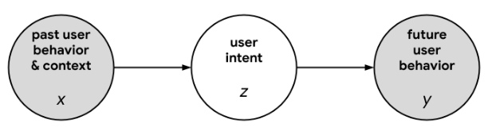
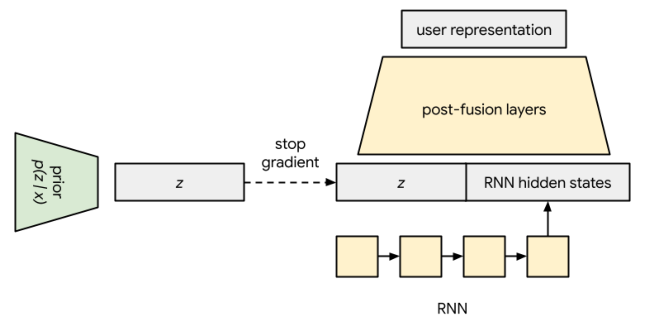

Latent User Intent Modeling for Sequential Recommenders (面向序列推荐的潜在用户意图建模)
- 会议/期刊: WWW '23 Companion（Industry Track，5 页短文）
- 作者与机构: Bo Chang, Alexandros Karatzoglou, Yuyan Wang, Can Xu, Ed H. Chi, Minmin Chen（Google）
- 推荐链路定位: 召回（候选检索阶段的用户表征增强），下游接独立精排
- 研究方向: 序列与会话推荐 / 强化学习与长期留存
- 论文原文: arXiv:2211.09832v2
- 开源代码: 暂未开源
TL;DR (1分钟核心速览)
主流序列推荐只吃 item 级交互序列，缺少「用户此刻为何而来」的高层意图。本文把意图 \(z\)形式化为潜变量，用条件 VAE（先验\(p(z|x)\)、解码器\(p(y|z)\)、编码器\(q(z|x,y)\)）从行为与上下文信号中无监督推断，再只取先验采样的\(\boldsymbol{z}\)以 stop-gradient 拼入 REINFORCE 序列召回器的用户表征。论文未用离线基准，而以三周大规模线上 A/B（十亿级用户、百万级物品）验证：整体满意度\(+0.07\%\)、主题多样性\(+0.10\%\)，95% CI 均不含 0，并已上线两周以上。
Background & Motivation (背景与核心矛盾)
- 主流范式: 序列推荐用 RNN / CNN / 自注意力对 item 交互序列建模，直接预测下一物品或用 REINFORCE 优化长期满意度。
- 前人局限: 其一，显式意图定义（导航 / 信息 / 交易型）依赖专家穷举，而自然推荐场景中意图是多面且下意识的，无法枚举；其二，纯 item 级建模只刻画 topical interest，无法表达「探索新内容 / 续上上一条会话 / 仅放背景音乐」这类跨会话、决定长期体验的意图状态。
- 核心洞察 (Key Insight): 假定过去行为与上下文 \(x\)到未来行为\(y\)的联系被意图\(z\)完全中介，即\(x \perp y \mid z\)；则\(z\)是二者的信息瓶颈，可由\((x,y)\) 共现用变分推断无监督学出，完全绕开意图标注。
- 本文切入点: 把意图模块做成与主模型解耦的独立模块，训练靠 ELBO、服务时只走先验网络，主推荐器结构不动，代价仅为一次 MLP 前向。

Method (核心方法设计)
1. 整体框架 (Overall Architecture)
输入侧 \(x\)是过去 15 分钟点击 / 搜索数与时间、设备等上下文，\(y\)是未来 15 分钟同类行为（替代「下一物品」作为重构目标）。潜意图模块由三个 MLP 参数化的对角高斯组成：先验\(p(z|x)=\mathcal{N}(\boldsymbol{\mu}_\psi,\boldsymbol{\Sigma}_\psi)\)、编码器\(q(z|x,y)\)、解码器\(p(y|z)\)，用 ELBO 独立训练；训练与服务阶段均从先验采样\(\boldsymbol{z}\)，经 stop-gradient 后与主模型 RNN 末隐状态拼接，过 post-fusion MLP 得到意图增强的用户表征，再与原物品表征做 softmax 策略打分，召回数百候选后交由独立精排。两个损失通过\(\lambda\) 加权联合优化，实现「意图模块负责理解、推荐模块负责决策」的职责分离。
flowchart TD
A["x: 过去15min行为+上下文"] --> B["先验网络 p(z|x)"]
A --> C["编码器 q(z|x,y) (仅训练)"]
D["y: 未来15min行为"] --> C
C --> E["ELBO 重构+KL 正则"]
B --> F["采样 z + stop-gradient"]
G["RNN 交互序列隐状态"] --> H["post-fusion MLP"]
F --> H
H --> I["softmax 策略召回候选"]
2. 关键设计拆解 (Key Designs)
-
与 PGM 一致的条件 VAE 目标：原版 CVAE 解码器吃 \(x\)会破坏\(x\perp y\mid z\)，故本文改为\(p(y|z)\)，让\(z\) 成为唯一信息通路与低维瓶颈： $\(\mathcal{L}_{\text{ELBO}}=\mathbb{E}_{q(z|x,y)}\left[\log p(y|z)\right]-D_{\mathrm{KL}}\left(q(z|x,y)\,\|\,p(z|x)\right)\le\log p(y|x)\)$ 第一项逼 \(\boldsymbol{z}\)保留能重构未来行为的信息，第二项把后验拉回仅凭\(x\)可得的先验；\(z\)维度小于\(y\)维，从而压掉不可由\(x\) 解释的噪声。
-
KL 爆炸的两道工程闸门（本文最实用增量）：工业数据下 KL 项在训练初期或中途爆炸直接导致训练失败。作者用 (i) 权重 \(\mathcal{U}(-\varepsilon,\varepsilon)\)、偏置置零的初始化，使初始时\(q(z|x,y)\approx p(z|x)\approx\mathcal{N}(\mathbf{0},\mathbf{I})\)、KL 近零；(ii) 用 softplus 把 log-variance 全程软截断到区间\((a,b)\)： $\(f(x)=x-\log\!\left(1+e^{\,x-b}\right)+\log\!\left(1+e^{\,a-x}\right)\)$ 两者叠加后 KL 全程有界，是低成本高收益的稳定性补丁。
-
训练目标、解耦与推理开销：总损失 \(\mathcal{L}=\mathcal{L}_{\text{rec}}-\lambda\mathcal{L}_{\text{ELBO}}\)（\(\lambda>0\)调节意图模块强度），\(\mathcal{L}_{\text{rec}}\) 仍是 REINFORCE 的长期满意度损失且形式不变；stop-gradient 使推荐梯度不回传意图模块，避免策略优化污染意图语义。推理仅新增一次先验 MLP 前向与一次采样，几乎不影响线上延迟；无负采样设计（依赖 in-batch 全候选 softmax 策略）。
Experimental Setup & Evaluation Protocol (实验设置与评估协议)
- 数据集与预处理: 无公开离线基准，全部实验在 Google 大规模线上推荐平台完成（十亿级用户、百万级物品、每次请求召回数百候选后由独立精排重排）。主题簇由 item 共现矩阵 \(\to\)矩阵分解得 item embedding\(\to\) k-means 聚为 10,000 个簇得到。
- 数据划分与防穿越 (Splitting Strategy): 采用线上时间切分的对照实验——三周内 control 与 experiment 两组模型均以流式新交互持续在线训练（非 Leave-One-Out、非固定比例划分）；离线部分仅用训练 step 上的 KL 曲线做潜空间诊断，不参与模型选择。
- 排名评测协议 (Ranking Protocol): 工业全链路真实打分排序（非采样排序），指标为平台级 overall enjoyment 与 unique topic cluster 数（消费多样性，作为长期体验的代理指标）；采用两独立组均值差的 95% 置信区间作为显著性口径（CI 不含 0 即显著）。
- 对比基线与超参设置: 基线即 Chen et al. 的 REINFORCE 序列推荐（无潜意图模块），同时也是唯一消融对照；潜变量维度取小于 \(y\)维的瓶颈设置，\(\lambda>0\)为 ELBO 权重，\(\varepsilon,a,b\) 未给具体数值。
Key Experimental Results (实验关键数据)
1. 主实验对比 (Main Results)
| 指标（线上 A/B，3 周） | Control（无潜意图） | Experiment（+潜意图） | 相对提升 | 95% CI | 显著 |
|---|---|---|---|---|---|
| Overall enjoyment | 基线 | 意图增强 | +0.07% | (+0.02%, +0.11%) | 是 |
| Diversity（unique topic clusters） | 基线 | 意图增强 | +0.10% | (+0.08%, +0.13%) | 是 |
说明：原文为工业 A/B，仅报告相对差值与置信区间，未披露绝对数值，故无法列出 5–8 个离线 SOTA 基线；control 模型即最强同类基线（REINFORCE 序列召回）。
2. 消融与稳定性诊断 (Ablation & Diagnostics)
原文未做传统离线消融，以下为可提取的组件级证据：
| 配置 | KL 项行为 | 结论 |
|---|---|---|
| 无小均匀初始化 + 无 soft-clip | 训练初期 / 中期爆炸 | 训练不稳定，不可用 |
| + \(\mathcal{U}(-\varepsilon,\varepsilon)\)初始化、零偏置 | 初始 KL\(\approx 0\) | 缓解，但不足 |
| + log-variance softplus 截断至 \((a,b)\) | 全程有界 | 采用配置 |
| 解码器输入 \(x\)，即$p(y | x,z)$ | — |
| 仅先验 + stop-gradient 注入主模型 | — | 线上 +0.07% / +0.10% |
3. 关键实验发现 (Key Findings)
- 收益虽小但确凿且随时间增强：\(+0.07\%\)与\(+0.10\%\) 的 95% CI 均严格不含 0，且 enjoyment 曲线呈持续上行趋势，作者归因于「用户学习效应」——策略改变用户状态后再被意图模型捕捉，形成正反馈。
- 后验-先验 KL 可作「惊讶度」探针：消费新物品或新主题（item 级与 topic 级两种定义）时 KL 显著高于旧物品，说明潜空间确实编码了行为转折而非静态兴趣，为无监督意图检测提供了可验证的语义锚点。
- 搜索行为突变可被潜变量感知：当 \(s_{\text{past}}>0,s_{\text{future}}=0\)或反之（行为跨越）时 KL 曲线高于未变化组，表明\(z\) 捕捉到了跨会话的意图切换——这正是纯 item 序列模型的结构性盲区。
Highlights & Limitations (亮点、对比与审稿批判)
- 与代表作对比 (vs. Prior Work): 相比 MCPRN 等混合通道 / 多意图路由方法（需预设意图数目并对每个 item 学购买目的），本文用连续潜变量+变分推断免除意图枚举；相比 SGL/SimGCL 类对比学习增强（改造 item 表征），本文增强的是请求时刻的用户状态；相比 TIGER 类语义 ID 生成式方法，本文不改变输出空间，只做表征注入，工程侵入性最低。
- 可迁移亮点: ① 把「后验-先验 KL」当作无监督的行为突变 / 新物品惊讶度信号，可用于新鲜度加权、探索触发；② 小均匀初始化 + softplus 软截断 log-variance，是任何 VAE 型推荐模块稳定训练的低成本药方。
- 审稿级局限批判: ① 评估单薄：仅工业 A/B、无公开数据集与离线基线，\(\lambda\)、\(z\)维度、\(\varepsilon,a,b\)均无敏感性分析，\(+0.07\%\)量级提升也难以排除长期漂移与新奇效应；② 信息通路过窄且不可解释：stop-gradient 加仅用先验，意图模块与主模型是「松耦合」，\(z\) 的语义只能靠 KL 曲线间接佐证，作者亦承认连续潜空间可解释性差（拟用 Gumbel softmax / VQ-VAE 离散化）；③ 5 页短文，缺少与「直接拼接更多上下文特征」这一强 shortcut 基线的对照，增益来源仍有归因空间。
Rating (四维评分)
- 方法创新性 (Novelty): ⭐⭐⭐⭐ （首次把潜变量/条件 VAE 意图建模引入工业序列召回，PGM 假设与解码器改造自洽，但技术组件均为已有工具的组合）
- 评估协议与实验扎实度 (Protocol & Experiments): ⭐⭐ （仅线上 A/B 与 KL 曲线诊断，无离线基准、无超参敏感性、无 shortcut 基线，显著性仅靠 CI）
- 写作与数学规范度 (Clarity & Rigor): ⭐⭐⭐⭐ （PGM→ELBO→注入的三段式推导清晰，软截断公式与稳定性论证到位，但超参与维度全部缺省）
- 工业落地与复现价值 (Industrial & Practical Value): ⭐⭐⭐⭐ （模块独立、主模型零改动、推理仅加一次 MLP 前向，已上线两周以上；但未开源且依赖内部平台数据，复现门槛高）